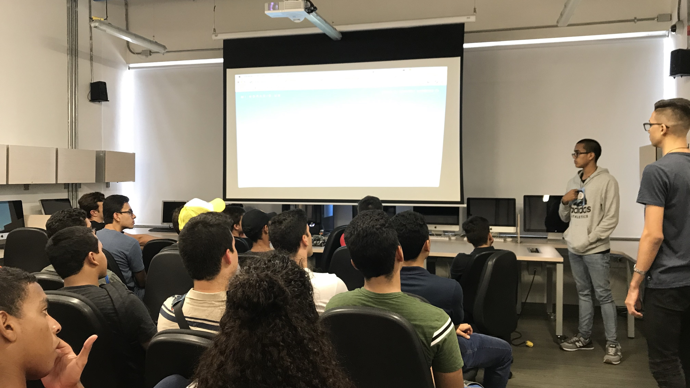
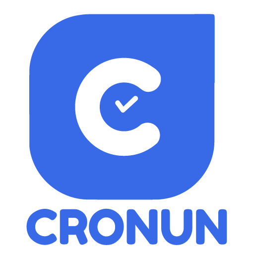
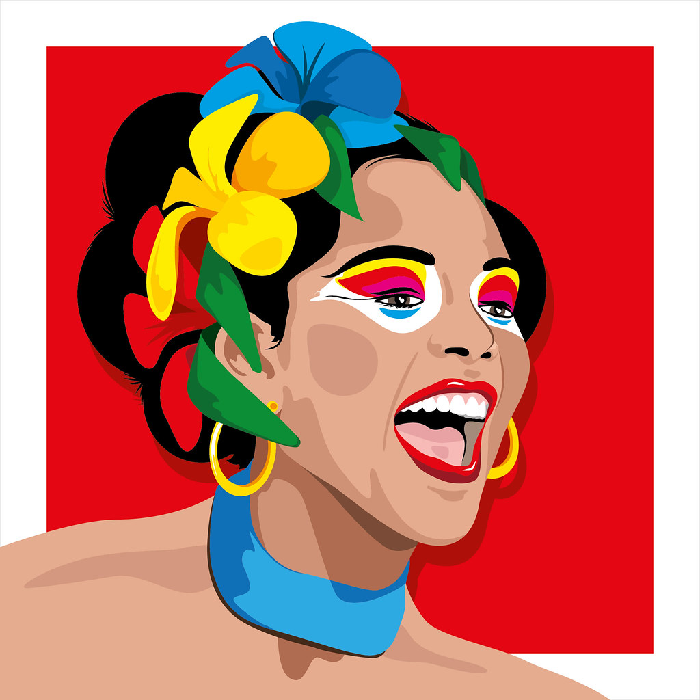
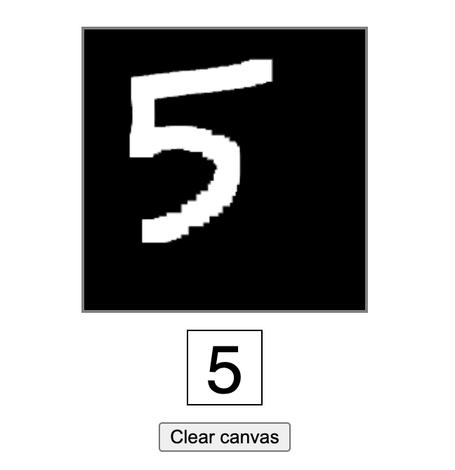
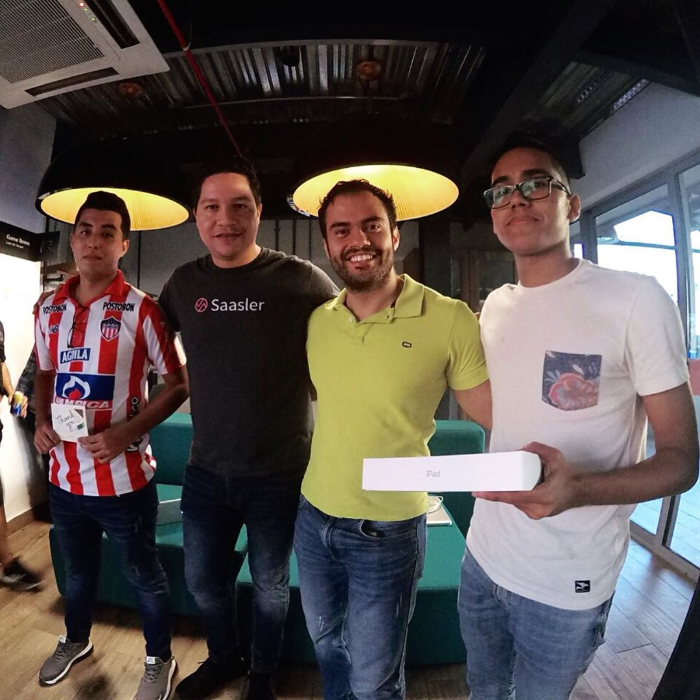
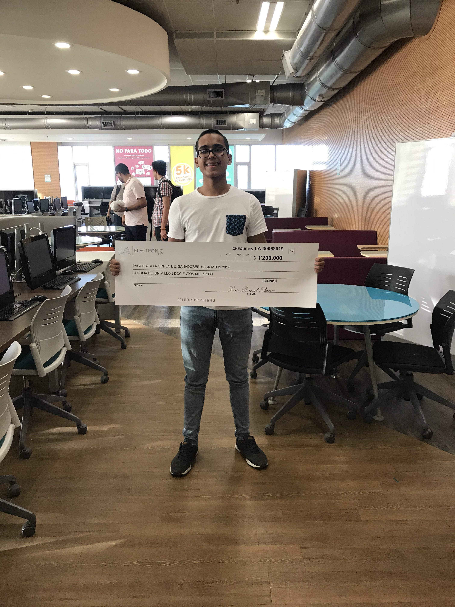
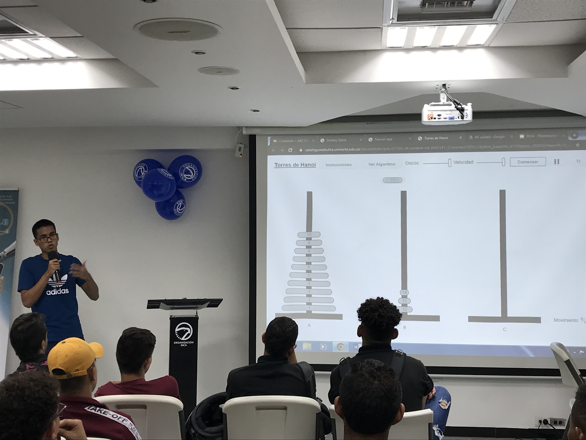
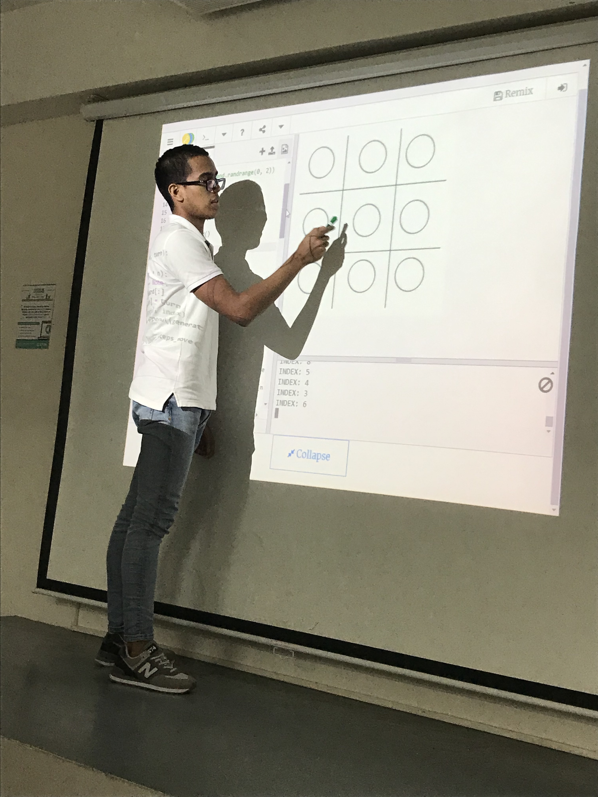
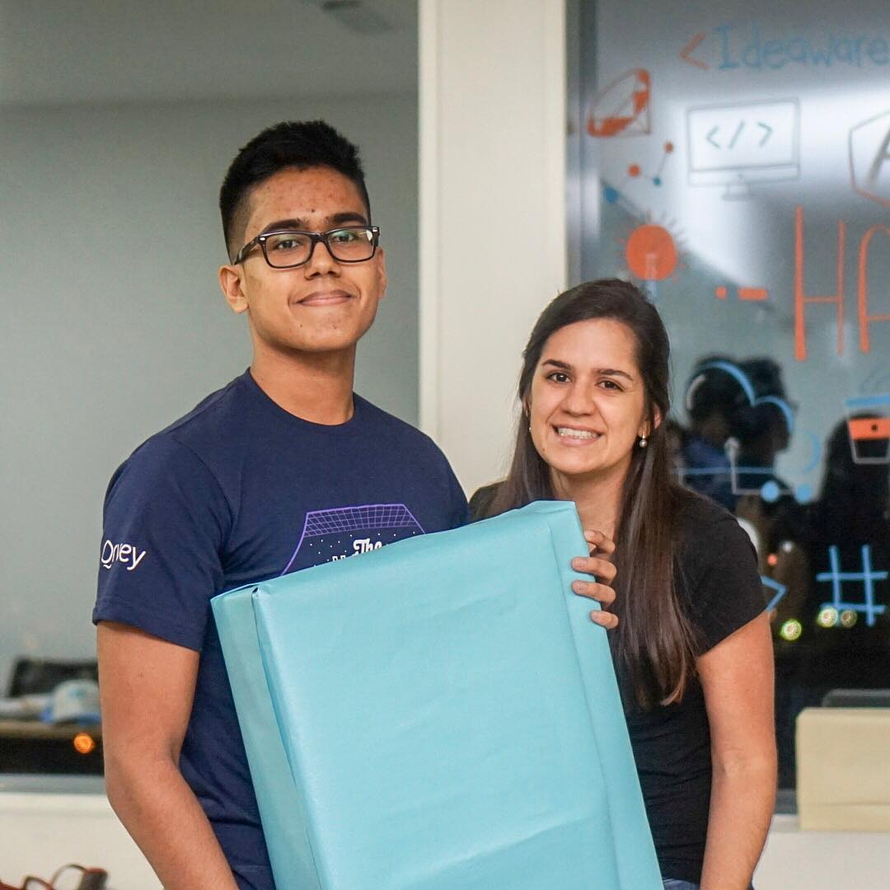
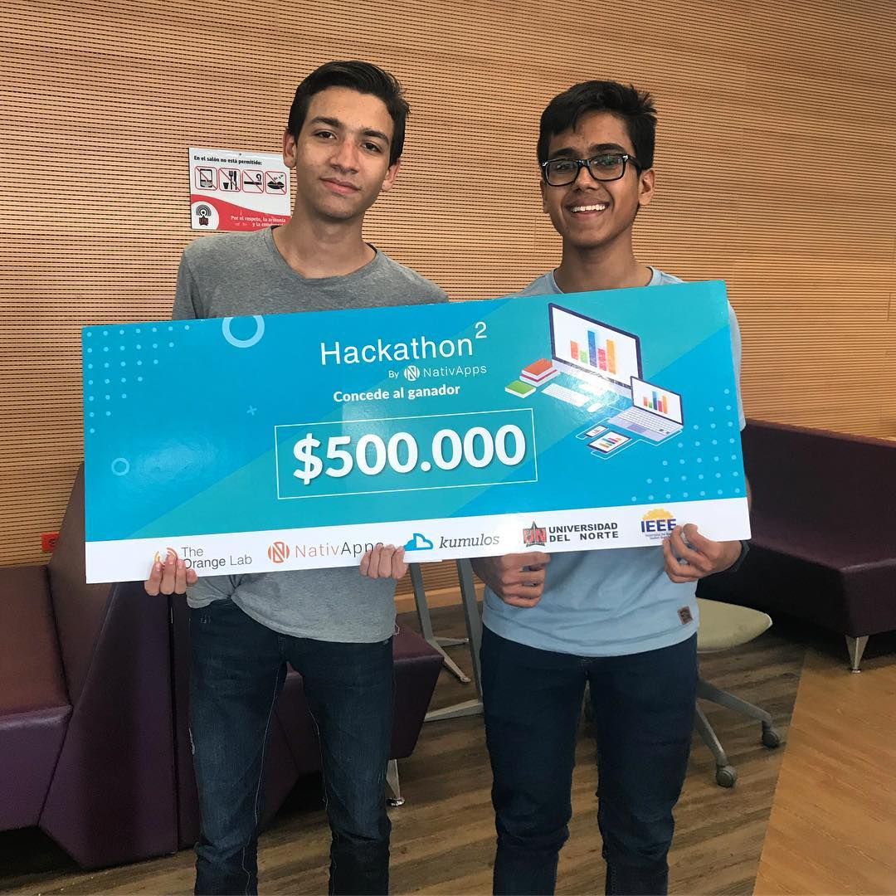

Software Engineer with over 2 years of Industry experience in web development. I am passionate about mentoring people who are learning to code. Data Assimilation and NLP enthusiast. Open Source lover.
What I do
Member of the Cronun development team, Colombia.
Monocuco is an Open Source dictionary of Spanish slang from Colombia Caribbean Region. Mihorario UN is an Open Source application for exporting Uninorte schedules to Google Calendar.
Handwritten digits recognition: Recognize numbers drawn on HTML5 canvas using CNN.
2019 Koombea Hackathon: Won first place out of 8 participants in Hackathon - Back End category.
2019 Lya Electronic Hackathon: Won first place out of 7 participants in Hackathon - Android category.
Inca School Technology and Innovation Fair: Speaker of "Systems Engineering" in Sep 2019.
IEEE Week: Conducted a workshop "Tic-tac-toe AI using DP-Method", 2019 Uninorte IEEE Week.
2018 Ideaware Hackathon: Won second place out of 12 participants in Hackathon - Back End category.
2018 NativApps Hackathon: Won first place out of 8 teams in Hackathon - Mobile app category.